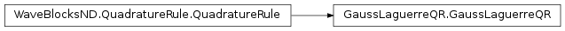
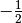
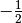
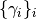

GaussLaguerreQR¶
About the GaussLaguerreQR class¶
The WaveBlocks Project
@author: R. Bourquin @copyright: Copyright (C) 2010, 2011, 2012, 2013, 2014, 2015, 2016 R. Bourquin @license: Modified BSD License
Inheritance diagram¶
Class documentation¶
-
class
WaveBlocksND.GaussLaguerreQR(order, a=-0.5, options={})[source]¶ This class implements a (generalized) Gauss-Laguerre quadrature rule.
-
__init__(order, a=-0.5, options={})[source]¶ Initialize a new quadrature rule.
Parameters: - order – The order
 of the Gauss-Laguerre quadrature.
From theory we know that a Gauss quadrature rule
of order is exact for polynomials up to
degree
of the Gauss-Laguerre quadrature.
From theory we know that a Gauss quadrature rule
of order is exact for polynomials up to
degree  .
. - a – The parameter
 of the generalized Gauss-Laguerre quadrature.
This value defaults to 0 resulting in classical Gauss-Laguerre quadrature.
of the generalized Gauss-Laguerre quadrature.
This value defaults to 0 resulting in classical Gauss-Laguerre quadrature.
Raise: ValueErrorif orderorderis not 1 or above.Warning
This quadrature is made specifically for our needs. Therefore the default values of
 is not 0 but set to . There
is hope that this will give less confusion and hidden errors.
is not 0 but set to . There
is hope that this will give less confusion and hidden errors.- order – The order
-
get_description()[source]¶ Return a description of this quadrature rule object. A description is a
dictcontaining all key-value pairs necessary to reconstruct the current instance. A description never contains any data.
-
get_dimension()¶ Returns: The space dimension  of the quadrature rule.
of the quadrature rule.
-
get_nodes()[source]¶ Returns the quadrature nodes .
Returns: An array containing the quadrature nodes .
-
get_number_nodes()¶ Returns: The number of quadrature nodes denoted by that are part of this quadrature rule  .
.
-